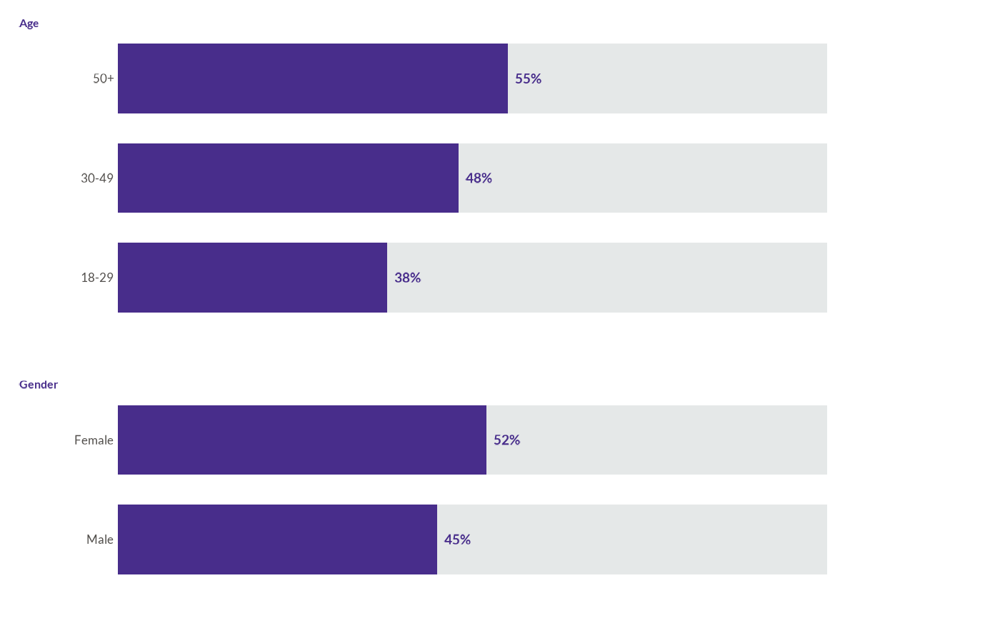
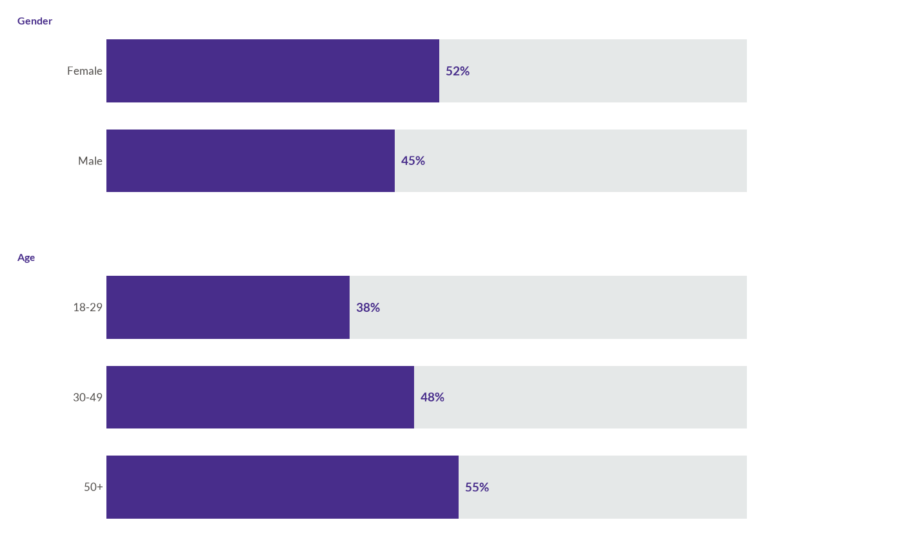

Plot a Grouped Stacked Bar Chart following WJP style guidelines
Source:R/groupbarsChart.R
wjp_groupbars.Rd![[Experimental]](figures/lifecycle-experimental.svg)
wjp_groupbars() creates a faceted horizontal stacked bar chart where bars are
grouped by categories and show a primary value (e.g., percentage) stacked with
its complement. Useful for displaying survey results broken down by demographic
groups like gender, age, income, etc.
Arguments
- data
A data frame containing the data to be plotted.
- target
String. Column name containing the numeric values to plot (typically proportions 0-1).
- grouping
String. Column name for the faceting variable (e.g., "Gender", "Age Group").
- levels
String. Column name for the categories within each group (e.g., "Male", "Female").
- colors
Character vector of length 2 with hex colors for primary and secondary bars. Default is c("#575796", "#e5e8e8").
- labels
String. Column name containing custom labels. If NULL, percentages are auto-generated. Default is NULL.
- group_order
Character vector specifying the order of facet groups. Default is NULL (uses data order).
- level_order
Named list where names are group values and values are character vectors specifying the order of levels within each group. Default is NULL (uses data order).
- show_national
Logical. If TRUE, adds a "National Average" row at the top. Default is FALSE.
- national_value
Numeric. The national average value to display when show_national is TRUE.
- ptheme
A ggplot2 theme. Default is WJP_theme().
Examples
library(dplyr)
library(ggplot2)
# Load WJP fonts (optional)
wjp_fonts()
# Create sample data
data_groups <- data.frame(
group = c("Gender", "Gender", "Age", "Age", "Age"),
category = c("Male", "Female", "18-29", "30-49", "50+"),
value = c(0.45, 0.52, 0.38, 0.48, 0.55)
)
# Basic grouped bars
wjp_groupbars(
data_groups,
target = "value",
grouping = "group",
levels = "category"
)

# With custom colors and group order
wjp_groupbars(
data_groups,
target = "value",
grouping = "group",
levels = "category",
colors = c("#2a2a94", "#d0d1d3"),
group_order = c("Gender", "Age")
)
